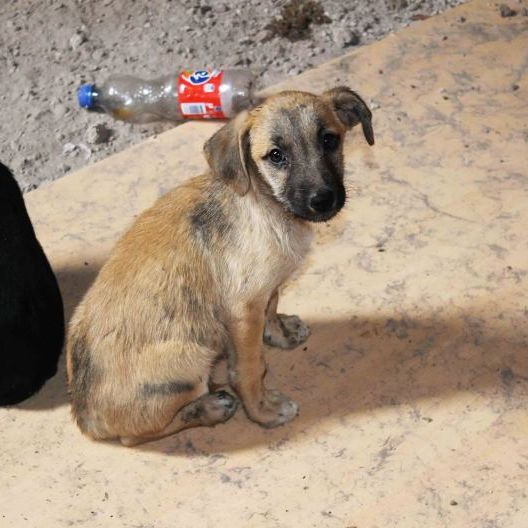

CASOS PRIORITARIOS
Firulais
Edad:14 MesesVacunado y Desaparazitado

Tito
Edad:5 MesesVacunado y Desaparazitado
Guliver
Edad:14 MesesVacunado, Desaparazitado, amaestrado
Es importante pensar en la razón principal para querer compartir tu hogar con una mascota, adoptar un animal simplemente para que cuide la casa o por capricho de los niños generalmente termina en un gran error. Debes tener en cuenta que algunas mascotas pueden estar contigo 10, 15 o incluso 20 años.